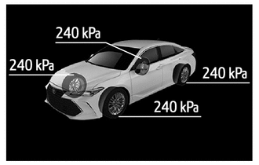
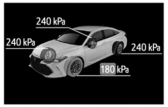
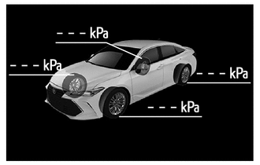

主要零部件的功能
| 零部件 | 功能 | |
|---|---|---|
|
*1：汽油车型 *2：HV 车型 |
||
| 轮胎压力警告阀和发射器 | ·
检测轮胎的充气压力和温度，并将测量值和 ID 代码传输至轮胎压力警告 ECU 和接收器。 ·
将来自内置加速度传感器的加速率信号传输至轮胎压力警告 ECU 和接收器，以识别轮胎位置。 |
|
| 轮胎压力警告 ECU 和接收器 | ·
接收来自各轮胎压力警告阀和发射器的数据并监控轮胎充气压力。 ·
检测到轮胎充气压力降低、系统故障或初始化开始时将各自信号输出至组合仪表总成。 ·
使用自防滑控制 ECU 的车轮转速信号和轮胎压力警告阀和发射器的加速信号，系统将各轮胎压力警告阀连接至轮胎位置。然后，将信号发送至组合仪表总成以在多信息显示屏上显示轮胎压力信息。 |
|
| 主车身 ECU（多路网络车身 ECU） | 接收来自轮胎压力警告 ECU 和接收器的信号，并将其通过 CAN 通信输出至组合仪表总成。 | |
| 转速传感器 | 分别检测 4 个车轮的车轮转速脉冲数并将 4 个车轮转速脉冲数信号发送至防滑控制 ECU。 | |
| 制动执行器总成*1 | 防滑控制 ECU | 将 4 个车轮转速信号传输至轮胎压力警告 ECU 和接收器。 |
| 带主缸的制动助力器总成*2 | 防滑控制 ECU | |
| 组合仪表总成 | 发送车速信号至轮胎压力警告 ECU 和接收器。 | |
| 组合仪表总成 | 轮胎压力警告灯 | 根据来自轮胎压力警告 ECU 和接收器的信号亮起或闪烁 1 分钟，以警告驾驶员。 |
| 多信息显示屏 | 显示识别的轮胎压力和位置以通知或警告驾驶员。 | |
| 方向盘装饰盖开关总成 | ·
按下时，将多信息显示屏上的信息切换成轮胎压力。 ·
通过操作开关对系统进行初始化。 |
|
| 中央网关 ECU（网络网关 ECU） | CAN 通信的网关功能。 | |
功能
轮胎充气压力显示功能
多信息显示屏显示以下内容以通知或警告驾驶员轮胎压力。
| 条件 | 多信息显示屏* |
|---|---|
|
*：这些插图为示例。 |
|
| 轮胎压力正常。 |  |
| 轮胎压力低于警告阈值。 |  |
·
未完成轮胎位置识别时。 ·
自动识别码注册未完成。 ·
系统发生故障时。 |
 |
将发动机开关（汽油车型）或电源开关（HV 车型）置于 ON (IG) 位置、进行初始化，或注册发射器识别码时，将执行轮胎位置识别。然而，在特定情况下，可能不会显示轮胎位置。在这种情况下，可能会通过持续行驶来恢复电波状况，以进行轮胎定位。
以 40 km/h 或更高的速度驾驶车辆约 10 至 30 分钟以完成轮胎位置识别。完成识别后，以约 1 分钟的间隔更新轮胎压力值。车辆静止时，每 1.5 分钟约更新一次气压值。
警告功能
满足下列任一条件时，轮胎压力警告系统点亮轮胎压力警告灯以警告驾驶员。
系统初始化过程中，轮胎压力下降至默认轮胎压力设定值的约 80% 或更低时。
完成系统初始化且行驶一段时间后，系统根据车辆驾驶条件修正初始化期间设定的轮胎压力并设定变暖时的轮胎压力。
根据检测到的状况，轮胎压力警告系统采用 2 种警告方法。
下表显示了组合仪表总成上的轮胎压力警告灯和多信息显示屏的警告方法。
| 检测条件 | 轮胎压力警告灯 | 多信息显示屏*3 |
|---|---|---|
|
*1：如果轮胎压力警告灯点亮，则调节轮胎压力。 *2：如果轮胎压力警告灯闪烁 1 分钟后持续点亮，则系统故障且必须进行维修以熄灭警告灯。有关详情，请参考修理手册。 *3：这些插图为示例。 |
||
| 轮胎压力警告系统检测到轮胎压力降至警告阈值以下。 | 点亮*1 | |
| 轮胎压力警告系统检测到系统故障。 | 闪烁 1 分钟后持续点亮*2 | |
初始检查功能
发动机开关（汽油车型）或电源开关（HV 车型）置于 ON (IG) 后，轮胎压力警告 ECU 和接收器亮起轮胎压力警告灯 3 秒以检测警告灯电路。
初始化功能
初始化时，通过轮胎充气压力阀和车轮转速传感器计算警告阈值和车轮位置并存储在轮胎压力警告 ECU 和接收器中。因此，应在进行以下程序后对轮胎压力警告 ECU 和接收器进行初始化。
由于车辆质量、车速情况或轮胎尺寸改变，推荐的轮胎充气压力改变。
更换轮胎压力警告 ECU 和接收器或轮胎压力警告阀和发射器。
调节轮胎压力。
旋转轮胎时。
初始化操作完成后，轮胎压力警告 ECU 和接收器接收初始化信号且轮胎压力警告灯缓慢点亮 3 次。
执行初始化前，轮胎冷态时调节轮胎充气压力至推荐压力。有关详情，请参考修理手册。
初始化操作并非用于取消警告，初始化操作用于关闭轮胎压力警告灯。
诊断
当轮胎压力警告 ECU 和接收器检测到系统故障时，轮胎压力警告 ECU 和接收器将使轮胎压力警告灯闪烁 1 分钟后持续点亮以警告驾驶员。其也会将诊断故障码 (DTC) 存储到存储器中。
Global TechStream (GTS) 连接到 DLC3 时可读取 DTC。有关详情，请参考修理手册。